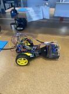

UC Merced · Biomedical Engineering · 2028
Luis Salvador Valdivia
Third-year biomedical engineering student, actively working in research. Project details, methods, and outcomes will be added as work is ready to publish.
- Portfolio state
- Content in progress
- Primary record
- Research · engineering · practice
Research should show its evidence.
Each entry will use one repeatable record: question, method, contribution, outcome. Empty fields stay visible until real content replaces them.
Current research
Open draft ↗- Lab + PI
- Research question
- Methods
- Contribution
- Outcome
- Source link
Line-following car
2026 ↗
- Arduino
- CAD modeling
- Circuit assembly
- Sensor feedback
Technical practice
Open draft ↗- Course or context
- Technical focus
- Artifact
- Takeaway
Academic record, without filler.
Known facts stay concrete. Missing details remain queued instead of being invented.
- Institution
- University of California, Merced
- Program
- Biomedical Engineering
- Academic level
- Third year
- Expected graduation
- 2028
- Research status
- Active